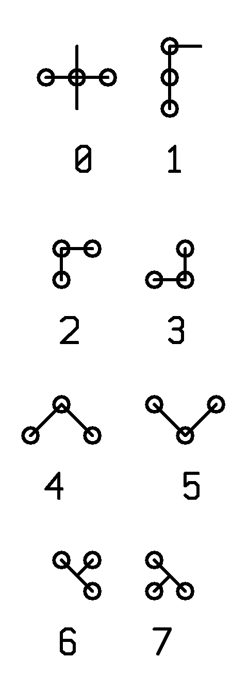

|
IGG uses CNC milling to manufacture some of the parts it makes. The CNC machine was bought
as a bare bone construction, which means it came without an external communication port
and can be programmed only via a small built-in touch screen. To cut the costs even more,
IGG bought the cheapest firmware - the one that doesn't include an advanced user interface.
Engineers program the CNC using octal digits drawn as strange glyphs on the display.
The engineers often write down their programs on paper, as that's the only way backing up their data. A lot of valuable CNC programs are stored this way. This is clearly not compliant with the policy the quality assurance auditors will mandate. The only solution is to finally convert the programs into conventional numbers, stored in text files. Unfortunately, due to the amount of data and the short deadline, this is not feasible to do by hand. The engineers used their off-work hours to scan the papers - everything is now available in high resolution gray scale bitmaps. The only missing step is to process the images and convert the symbols into numbers. |

canonical form of the digits |
There are 8 digits, from 0 to 7. The canonical printed forms are as given above - hand written symbols may be less perfectly shaped. Each digit consists of 3 circles and 2 lines.
0421501451541541570425 0421671571621541440423